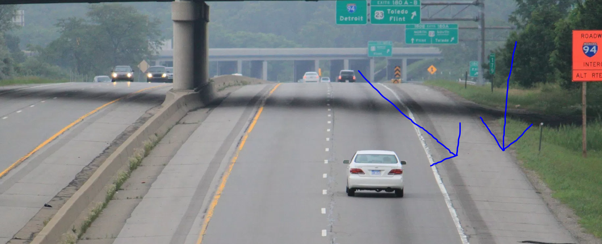
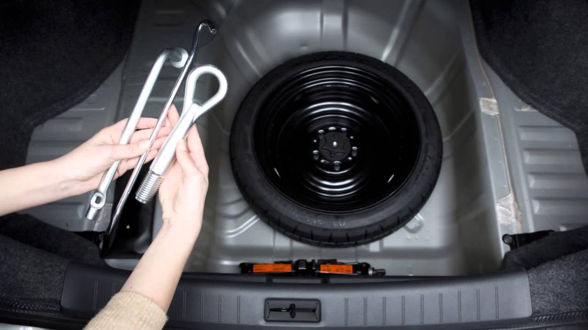
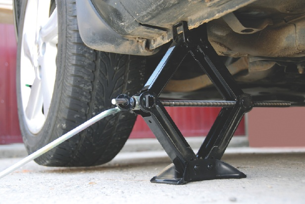
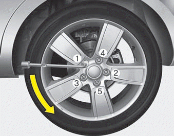
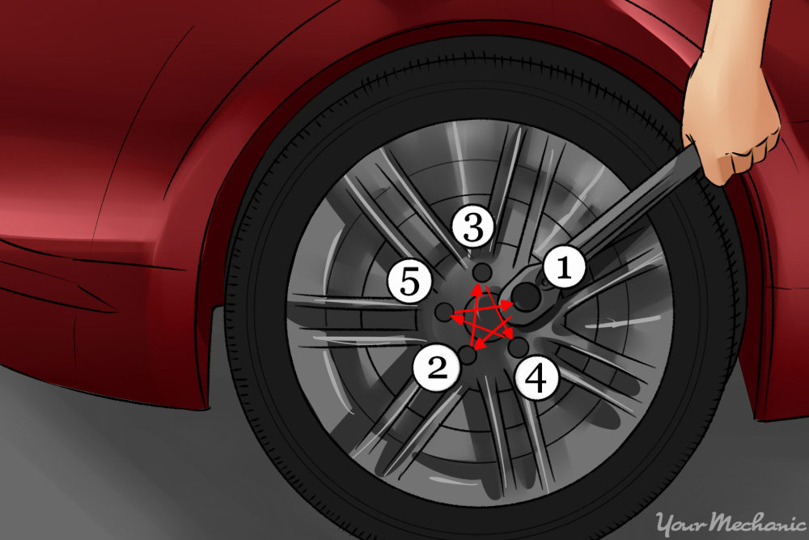

Step 1: Once you release you have a flat tire, make sure you find a safe place to pull over on the side of the road. Somewhere where there is a large margin on the side of the road (see picture below). Prefereably on the right side of the road.

Step 2: When you have found a safe place to park, inspect the damage on the flat tire, then go to your truck and look for supplies. There should be tools, and a space tire in your truck usually under the floor mat of the truck. (see image below for example). You will want to find the following tools

Step 3: When you take the tools out first grab the jack, and the rod for the jack. Place the rod in the small circle a the end of the jack. Make sure the jack is placed under the frame of the car just inside of the flat tire, (not on the body, it will brake.) then with rod in place you will want to turn the rod clockwise, or to the right. This will lift the car up off the ground. Lift the car until the flat tire is no longer touching the ground. (See example in picture)

Step 4: Your next goal is the remove the flat tire from the car. There should be 5 lug nuts holding the tire to the axel. Now with the wrench you will want to place the wrench on each nut, one at a time, and loosen them until you can remove them. To loosen the lug nuts you will want to twist the wrench counterclockwise, or to the left. If the lug nut feels stuck try a few hard knocks on the wrench to loosen it, again moving it counterclockwise, or to the left. (see image below for example)

Step 5: Once you have loosened the lug nuts, and pulled the tired from the car, your next step will be to put the new tire on and reattach it to the car. First, place the space tire on the axel, where you just removed the flat tire from. Next take the lug nuts you had removed from the car and you will now want to reattach these so to fasten down the tire to the axel. One at a time place a lug nut on the bolt and twist it clockwise, or to the right to tighten, you may do with with all five wit your fingers until snug.
Then you will take the wrench you used to loosen the nuts, and use it to tighen them down snug. This is done by turning the wrench clockwise, or to the right until tight. This should be done in a star fasion. This means start on one nut, and tighen it down until tight, then move to the nut directly across from it and tighten it down. Continue this until all are tight. (See examples photo below.)

Step 6: After the space is fasten tightly on you can lower the jack by turning the rod counterclockwise, or to the left until the new spare tire is back on the ground and you can safely remove the jack. You can replace your tools, and your flat tire to the trunk location, and drive your nearest tire repair shop to get your flat fixed. Remeber that you shouldn't drive more than 70 miles on your spare tire, to sooner you get it fixed the better.
Now put a big smile on that face because you just fixed your flat tire!